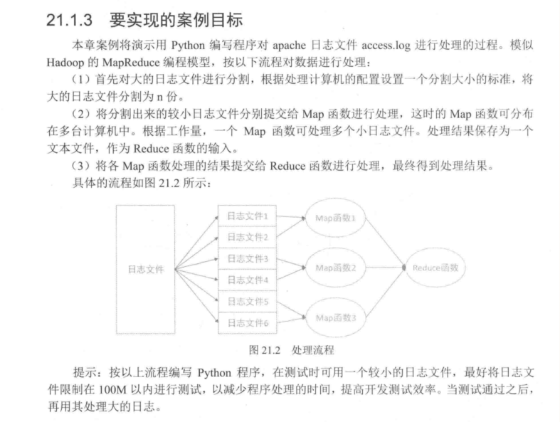

Contents
19.6. Python处理大数据日志文件¶
19.6.1. 处理日志文件¶

分割日志文件¶
当日志文件很大时，没办法将其打开，就需要对日志进行分割
#!/usr/bin/env python
# -*- coding:utf8 -*-
# auther; 18793
# Date：2020/1/7 11:25
# filename: 分割日志文件.py
import os, os.path, time
def FileSplit(sourceFile, targetFolder):
sFile = open(sourceFile, "r")
number = 500 # 每个小文件中保存100000条数据
dataLine = sFile.readline()
tempData = [] # 缓存列表
fileNum = 1
if not os.path.exists(targetFolder): # 如果目标目录不存在，则创建
os.mkdir(targetFolder)
while dataLine: # 有数据开始读取
for row in range(number):
tempData.append(dataLine) # 将一行数据添加到列表中
dataLine = sFile.readline()
if not dataLine: # 没有数据需要保存
break
tFilename = os.path.join(targetFolder, os.path.split(sourceFile)[1] + str(fileNum) + ".txt")
tFile = open(tFilename, "a+") # 创建小文件
tFile.writelines(tempData) # 将列表保存到文件中
tFile.close()
tempData = [] # 清空缓存列表
print(tFilename + "创建于：" + str(time.ctime()))
fileNum += 1
sFile.close()
if __name__ == '__main__':
FileSplit("access.log", "access")
· 设置分割文件要保存数据的数量，并设置一个空列表作为缓存用来保存分割文件的数据
· 打开大的文件，逐行读取数据，再将其添加到缓存列表中，当达到分割文件保存数量时，将缓存列表的数据写入文件
· 清空缓存列表。继续从大的日志文件中读入数据，重复前面的操作。
用Map函数处理小文件¶
#!/usr/bin/env python
# -*- coding:utf8 -*-
# auther; 18793
# Date：2020/1/7 11:37
# filename: Map函数处理小文件.py
import os, os.path, time
import re
def Map(sourceFile, targetFolder):
sFile = open(sourceFile, "r")
dataLine = sFile.readline()
tempData = {} # 缓存列表
if not os.path.exists(targetFolder): # 如果目标目录不存在，则创建
os.mkdir(targetFolder)
while dataLine: # 有数据开始读取
p_re = re.compile(r"(GET|POST)\s(.*?)\sHTTP/1.[01]]", re.IGNORECASE) # 使用正则表达式解析数据
match = p_re.findall(dataLine)
if match:
visitUrl = match[0][1]
if visitUrl in tempData:
tempData[visitUrl] += 1
else:
tempData[visitUrl] = 1
dataLine = sFile.readline() # 读入下一行数据
sFile.close()
t_List = []
for key, value in sorted(tempData.items(), key=lambda k: k[1], reverse=True):
t_List.append(key + "" + str(value) + "\n")
tFilename = os.path.join(targetFolder, os.path.split(sourceFile)[1] + "_map.txt")
tFile = open(tFilename, "a+")
tFile.writelines(t_List)
tFile.close()
if __name__ == '__main__':
Map("access\\access.log1.txt", "access")
Map("access\\access.log2.txt", "access")
Map("access\\access.log3.txt", "access")
Map("access\\access.log4.txt", "access")
·定义一个字典，用字典来保存访问页面和访问量。
· 用正则提取页面地址
· 判断字典中是否有此键，若有在此键的值上加一，若没有则新建一个键，并设置访问量为1
· 对字典进行排序后加入到列表中
· 将列表数据写入到新的_map.txt文件中
用Reduce函数归集数据¶
#!/usr/bin/env python
# -*- coding:utf8 -*-
# auther; 18793
# Date：2020/1/7 12:44
# filename: Reduce归集处理.py
import os, os.path
import re
def Reduce(sourceFolder, targetFolder):
tempData = {} # 缓存列表
p_re = re.compile(r"(.*?)(\d{1,}$)", re.IGNORECASE) # 用正则表达式解析数据
for root, dirs, files in os.walk(sourceFolder):
for file in files:
if file.endswith("_map.txt"): # 是reduce文件
sFile = open(os.path.abspath(os.path.join(root, file)), "r")
dataLine = sFile.readline()
# 将数据装入字典
while dataLine: # 有数据
subdata = p_re.findall(dataLine) # 用空格分割数据
if subdata[0][0] in tempData:
tempData[subdata[0][0]] += int(subdata[0][1])
else:
tempData[subdata[0][0]] = int(subdata[0][1])
dataLine = sFile.readline() # 读入下一行数据
t_List = []
# 对字典进行排序并装入列表
for key, value in sorted(tempData.items(), key=lambda k: k[1], reverse=True):
t_List.append(key + "" + str(value) + "\n")
# 最后将列表输出到xxx_reduce.txt文件
tFilename = os.path.join(targetFolder, targetFolder + "_reduce.txt")
tFile = open(tFilename, "a+")
tFile.writelines(t_List)
tFile.close()
if __name__ == '__main__':
Reduce("access", "access")
· 定义一个空字典，用来归并所有页面访问量数据
· 使用os.walk循环目录，找到”_map.txt”的文件进行处理
· 逐个读入”_map.txt”文件，将数据装入字典，进行排序后，传入列表中，最后将列表输出到文件中。